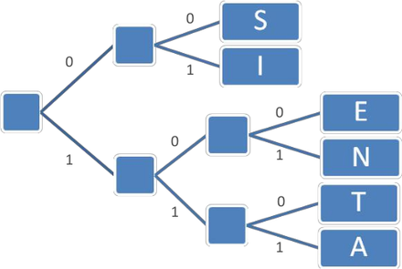
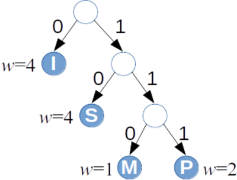

Unikoda alfabēts (UCS-2, Basic Multilingual Plane): 65536 simboli. Pavisam Unikoda standartā ir ap 170 tūkstošiem simbolu, bet tad kodējumā parādās “papildu plaknes”.
Vai baits ir 8 biti?
Datoru arhitektūrā baits (byte) vienmēr ir 8 biti
Baitu var uztvert arī kā nedalāmu viena loģiska simbola kodējumu.
ASCII kodējums vēsturiski pieraksta populārajiem tastatūras simboliem 7 bitus. Tātad \(256-128=128\) vietas paliek neaizņemtas.
Neaizņemtās vietas var aizpildīt ar citiem derīgiem simboliem. 1990-tajos gados “KOI-8”, “Windows-1257” u.c. kodējumi ērti lietoja baitus, lai tur saliktu modificētos R-Eiropas burtus, latviešu vai krievu burtus, u.c.
Ziņojumu kopa
Saspiešanas algoritmi ne vienmēr saspiež individuālus burtus.
To salīdzināšanai ir derīgāks jēdziens: \(S\) - iespējamo ziņojumu kopa (the set of messages). Sākotnējie ziņojumi pierakstīti vienā alfabētā, to kodējumi - varbūt jau citā. \[S = \{ s_1, s_2, \ldots, s_n \}.\]
Atkarībā no konteksta ziņojums var būt atsevišķs burts, noteikta garuma vārds vai pat vesels fails (ziņojumu kopa var būt arī bezgalīga, bet mums parasti to nevajadzēs).
Ja ziņojumam ir zināms garums sākotnējā, nesaspiestajā formā, var runāt par saspiešanas attiecību (compression ratio).
Kodējuma jēdziens
Kodējums \(C\) ziņojumu kopai \(S\) ir attēlojums, kas katru ziņojumu pārvērš par bitu virkni. Katru bitu virkni sauc par kodavārdu (codeword) un apzīmēsim visus kodējumā ietilpstošos attēlojumus šādi: \[C = \{ (s_1,w_1),(s_2,w_2),\ldots,(s_m,w_m)\}.\]
2 saspiešanas veidi
Compression,decompression
Bezzudumu saspiešana: Atspiestais ziņojums precīzi sakrīt ar sākotnējo.
Iecienīts teksta dokumentiem, izpildāmam kodam.
Zudumradošā saspiešana: Atspiestais ziņojums tikai aptuveni vienāds ar sākotnējo.
Attēlu, skaņas, video glabāšana un pārraide.
Universāli saspiest nevar
Neeksistē tāds algoritms, kas katru\(n\) bitu virkni bezzudumu saspiešanā pārveido par \(k\) bitu virkni, kur \(k < n\).
Pamatojums: Ar skaitīšanu.
Bitam ir \(2\) vērtības (\(0\) vai \(1\)).
\(m\) bitu virknei ir \(2^m\) vērtības,
\(k\) bitu virknei ir \(2^k\) vērtības.
Injektīvi attēlojumi
Definīcija: Funkciju \(f\,:\;X \rightarrow Y\) sauc par injektīvu, ja katriem diviem argumentiem \(x_1,x_2 \in X\) izpildās: \[x_1 \neq x_2\;\;\Rightarrow\;\;f(x_1) \neq f(x_2).\]
Bezzudumu saspiešanas funkcijai jābūt injektīvai, tajā nedrīkst būt “kolīzijas” (vērtību “saskriešanās”).
Bet no Dirihlē principa (Pigeonhole principle) tieši seko, ka injektīva funkcija no kopas ar \(2^m\) elementiem uz \(2^k\) elementiem (ja \(k < m\)) neeksistē.
Dažāda garuma kodi var palīdzēt ietaupīt vietu. Ja visus ziņojumus kodē vienādi gari, tad katrs simbols aizņem \({\displaystyle \left\lceil \log_2 |S| \right\rceil }\) - tas parasti ir ļoti neoptimāli.
Ar dažāda garuma kodavārdiem rasties divdomības (ambiguities). Piemēram, ja kodējums ir \[\{(a, \mathtt{1}), (b, \mathtt{01}), (c, \mathtt{101}), (d, \mathtt{011})\},\] tad \(\mathtt{1011}\) var saprast trīs dažādos veidos: \[\mathtt{1.01.1},\;\;\mathtt{1.011},\;\;\mathtt{101.1}.\]
Prefiksu kodējuma jēdziens
Prefiksu koks
Prefiksu kodējumā (prefix code) neviens kodavārds nav cita kodavārda prefikss.
(Faktiski “bezprefiksu” kodējums.)
Pieņemsim, ka ir zināms varbūtību sadalījums ziņojumu telpā \(S\): Katram \(s \in S\) ir piekārtota varbūtība \(p(s)\) un \(p(s_1)+\ldots+p(s_n)=1\).
Definīcija: Par kodējuma \(C = \{(s_1,w_1),\ldots,(s_n,w_n)\}\)vidējo garumu (average length) sauksim summu: \[\ell_a(C) = \sum\limits_{(s,w) \in C} p(s)\ell(w),\] kur \(\ell(w)\) apzīmē kodavārda \(w\) garumu bitos.
Optimāls prefiksu kodējums
Definīcija: Teiksim, ka prefiksu kods \(C\) ir optimāls prefiksu kods, ja tā \(\ell_a(C)\) ir minimāls. Citiem vārdiem, ja dotajam ziņojumu varbūtību sadalījumam neeksistē cits prefiksu kods, kam vidējais garums ir vēl zemāks.
Morzes kods
Morzes kods izmanto mainīga garuma kodēšanas principus (biežākiem simboliem atbilst īsāki kodavārdi).
Attiecībā uz svītriņām un punktiņiem tas nav prefiksu kods. Atkodēšanas viennozīmību nodrošina atšķirīgās pauzes.
B = 0 (1 bits)
A = 10 (2 biti)
C = 110 (3 biti)
D = 111 (3 biti)
Ja kodētājs un saņēmējs zina, ka lietots sakārtots ziņojumu alfabēts \(S=\{ A,B,C,D \}\), tad pietiek paziņot attiecīgo burtu kodavārdu garumus: \(2, 1, 3, 3\).
Daži Hafmana algoritma lietojumi
PKZIP (Phil Katz) arhivators - PKZIP 2.04g un jaunāki standarti, kuri lieto DEFLATE saspiešanas standartu (tas pats, kas populārie Zip failu formāti mūsdienās).
Teorēma: Hafmana algoritms ģenerē optimālu bināro prefiksu koku ziņojumu kopai \(S\) pie dotā varbūtību sadalījuma.
Starp visiem kodējumiem \(C\), kur ziņojumiem \(s \in S\) kaut kā piešķir bezprefiksu kodus \(w_s\), vid. garums \[\ell_a(C) = \sum\limits_{(s,w_s) \in C} p(s)\ell(w_s)\] Hafmana koka aprakstītajā kodējumā \(C^{\ast}\) būs vismazākais (vai viens no vismazākajiem).
Optimalitātes pierādījums - 1
Bāze: Ja ziņojumu alfabētā \(S\) ir \(1\) burts. Tad ir tikai viens koks, kas ir gan optimālais, gan Hafmana koks.
Indukcijas pāreja: Ja ir vismaz divi burti. Pieņemam, ka Hafmana algoritms vienmēr dod optimālu koku pie \(k-1\) burtiem.
Tagad dots alfabēts \(S\) ar \(k\) burtiem, kur \(x\) un \(y\) ir divi visretāk sastopamie burti.
Optimalitātes pierādījums - 2
Pirmajā solī Hafmana algoritms apvieno virsotnes \(x\) un \(y\). Izveidojas jauna virsotne, kuras biežums ir \(p(x) + p(y)\). Tālāk ir jāpielieto Hafmana algoritms \(k-1\) burtam.
Pēc indukcijas pieņēmuma Hafmana algoritms \(k-1\) burtam dod optimālo koku. Tas nozīmē, ka Hafmana algoritms dod optimālo koku starp tiem kokiem, kuros \(x\) un \(y\) atrodas blakus.
Varbūt ir vēl optimālāks koks, kur \(x\) un \(y\) neatrodas blakus?
Optimalitātes pierādījums - 3
Pamatosim, ka citus kokus var pārveidot par kokiem, kuri ir vismaz tikpat optimāli, turklāt \(x\) un \(y\) ir blakus.
Optimālā kokā izpildās 2 apgalvojumi:
Ja \(p(x) < p(y)\), tad \(\ell_x \geq \ell_y\) (citādi varētu apmainīt \(x\) un \(y\) vietām kokā un kodējuma garums no tā samazinātos.)
Apskatīsim maksimālo kodavārda garumu jeb prefiksu koka dziļumu ar \(\ell_{\text{max}}\). Tad ir divi tādi burti \(u\), \(v\), kuriem \(\ell_u = \ell_v = \ell_{\text{max}}\). (Vispirms atrodam maksimāli dziļu \(u\). Ja blakus nebūtu šķautnes uz \(v\), tad varētu saīsināt \(u\) kodējumu par vienu šķautni.)
Definīcija: Ja (diskrētam) gadījuma lielumam (random variable) ir zināma iespējamo stāvokļu kopa \(S\) un katram \(s \in S\) zināma varbūtība, tad par gadījuma lieluma entropiju sauc vērtību: \[H(S) = - \sum\limits_{s \in S} p(s) \log_2 p(s),\] kur \(p(s)\) ir stāvoklim \(s\) atbilstošā varbūtība.
Kloda Šenona “pašinformācija”
Katram ziņojumam \(s \in S\) Klods Šenons (Claude Shannon) definēja arī pašinformāciju (self information) ar izteiksmi: \[h(s) = \log_2 \frac{1}{p(s)} = -\log_2 p(s).\]
Jo retāks kāds ziņojums, jo tā apgrieztā varbūtība ir lielāka, arī logaritms no tās lielāks.
Tomēr entropija galīgai ziņojumu kopai paliek ierobežota arī ja daži \(p(s) \rightarrow 0\), jo \(\lim_{x \rightarrow 0} x \log_2(x) = 0\).
Piemēri: monēta un metamais kauliņš
“Godīgai” monētai ir divi stāvokļi: \(S=\{ \text{cipars}, \text{ģerbonis} \}\), katram \(p=\frac{1}{2}\). Entropija ir \[H(S) = - (1/2) \cdot \log_2 (1/2) - (1/2) \cdot \log_2 (1/2) = 1/2+1/2 = 1.\]
Metamajam kauliņam ir seši stāvokļi, katram no tiem varbūtība ir \(1/6\). Entropija: \[H(S) = - 6 \cdot ((1/6) \cdot \log_2 (1/6)) \approx 2.585.\]
Bitu virknītes entropija
Piemērs: Ja ir \(n = 2^L\) ziņojumi ar vienādām varbūtībām \(1/n\), tad katru no tiem var iekodēt ar \(\log_2 n = L\) bitiem.
Katra ziņojuma pašinformācija \(h(s) = -\log_2 (1/n) = \log_2 n = L\). Tātad arī entropija (visu šo “pašinformāciju” svērts aritmētiskais vidējais) ir \(L\).
Šajā ekstrēmajā gadījumā entropija precīzi sakrīt ar kodēšanai nepieciešamajiem baitiem.
2 ziņojumu pašinformāciju summa?
Pieņemsim, ka \(A,B \in S\) ir divi ziņojumi, kas ir neatkarīgi kā varbūtiski notikumi. Tad saņemt tos vienu pēc otra var ar varbūtību \(p(AB) = p(A) \cdot p(B)\) un informācijas daudzums: \[h(AB) = -\log_2 (p(A) \cdot p(B)) = \]\[= -\log_2(p(A)) - \log_2(p(B)) = h(A) + h(B).\]
Logaritms ir vienkārša funkcija, kas reizinājumu pārtaisa par summu.
Entropijas saistība ar saspiešanu
Teorēma: Katrai ziņojumu kopai \(S\) ar zināmu varbūtību sadalījumu un optimālu prefiksu kodējumu \(C\): \[\ell_a(C) \leq H(S) + 1.\]
Dots kalkulators, kurš rēķina \(f(x) = \text{ln}\,x\) (logaritmu ar bāzi \(e = 2.71828\ldots\)). Kā ar šo kalkulatoru aprēķināt \(\log_2 6\) (piemēram, nosakot metamā kauliņa ģenerētā gadījumlieluma entropiju)?
Kāds ir Hafmana kodējuma vidējais garums, ja ar to kodē burtu virknīti MISSISSIPPI. Atbildi noapaļot līdz diviem cipariem aiz komata.
Ierakstīt skaitli formātā d.dd: _____
Jautājums Nr.3: Atrisinājums
Mississippi tree
\(a \in S\)
\(w(a)\)
\(\ell_a\)
\(p(a)\)
I
0
1
\(4/11\)
S
10
2
\(4/11\)
M
110
3
\(1/11\)
P
111
3
\(2/11\)
Burtu \(I,S,M,P\) kodējumu garumi ir attiecīgi \(1,2,3,3\) biti. Piereizinām ar attiecīgo burtu varbūtībām (to relatīvajiem biežumiem vārdā MISSISSIPPI).
Kāds būtu kodējuma vidējais garums, ja vārdā MISSISSIPPI katru no četriem burtiem kodētu šādi: \[C = \{(I,\mathtt{00}),(M,\mathtt{01}),\]\[(P,\mathtt{10}),(S,\mathtt{11})\}.\] Atbildi noapaļot līdz diviem cipariem aiz komata.
Ierakstīt skaitli formātā d.dd: _____
Jautājums Nr.4: Atrisinājums
Pat neko nerēķinot, redzams, ka ikviena simbola kodējuma garums ir \(2\), tātad arī vidējais kodējuma garums būs svērts vidējais starp visiem šiem divniekiem:
Kļūdas un nepatikšanas ar robežgadījumiem.
Ja algoritmam robežgadījumu nav un heiristikas tur nelieto, tas (vēl) nav īstās dzīves algoritms. (Saspiešanas algoritmiem - ļoti gari failu ceļi; īpaši simboli failu vārdos.)
Gatavu bibliotēku lietošana
Gatavu bibliotēku izmantošana nav triviāla:
Izvēlēties implementāciju un versiju,
Cīnīties ar licencēm,
Pareizi izsaukt (saspiešanai - saprast baitu vai simbolu plūsmu ievadi/izvadi) un konfigurēt,
Rakstīt vajadzīgās diagnostikas žurnālfailos (logs),
Testēt un profilēt veiktspēju (sk. software profiling).